Creates data used to make used-habitat calibration plots
prep_uhc(object, test_dat, n_samp = 1000, n_dens = 512, verbose = TRUE)
# S3 method for glm
prep_uhc(object, test_dat, n_samp = 1000, n_dens = 512, verbose = TRUE)
# S3 method for fit_logit
prep_uhc(object, test_dat, n_samp = 1000, n_dens = 512, verbose = TRUE)
# S3 method for fit_clogit
prep_uhc(object, test_dat, n_samp = 1000, n_dens = 512, verbose = TRUE)Arguments
- object
[glm, fit_logit, fit_clogit]
A fitted RSF or (i)SSF model. Should be fit to training dataset separate from the testing data.- test_dat
[data.frame]
Adata.framewith testing data from which to sample test points. Should be separate from the data used to train the model passed toobject.- n_samp
[numeric = 1000]Avectorof length 1 giving the number of samples to use to characterize the used habitat distribution under the model.- n_dens
[numeric = 512]Anumericvector of length 1 giving the number of equally spaced points at which density (used, available, and sampled) is estimated. Passed tostats::density.default(), which indicates thatnshould usually be specified as a power of 2.- verbose
[logical]Should messages be displayed (TRUE) or not (FALSE)?
Value
Returns a list of class uhc_data with elements:
orig: List ofdata.frames, one per variable (seevars). Eachdata.framecontains the density plot data (xandy) for the original used (dist == "U") and available (dist == "A") data.samp: List ofdata.frames, one per variable (seevars). Eachdata.framecontains the density plot data (xandy) for each iteration of bootstrap resampling (iter).vars: Character vector with names of the habitat variables for which to create UHC plots.type: Named character vector with the type for each ofvars(either"numeric"or"factor").resp: Character vector of length 1 with the name of the response variable.
Details
This function performs the heavy lifting of creating UHC plots.
It creates the data used later by the plot() method, which actually
draws the UHC plots. This function (1) creates density plots of the used
and available locations from the test data, and (2) resamples the (a)
fitted coefficients and (b) test data (weighted by the exponential habitat
selection function) to create the distribution of used habitat under the
model.
Note that test_dat should contain at least all of the variables that
appear in the model object. Any further habitat variables in test_dat
will also have UHC plots generated, treating these variables as possible
candidate variables that are simply not included in this particular model.
References
Fieberg, J.R., Forester, J.D., Street, G.M., Johnson, D.H., ArchMiller, A.A., and Matthiopoulos, J. 2018. Used-habitat calibration plots: A new procedure for validating species distribution, resource selection, and step-selection models. Ecography 41:737–752.
See also
See Fieberg et al. 2018 for details about UHC plots.
Default plotting method available: plot.uhc_data()
Coercion to data.frame: as.data.frame.uhc_data()
Subsetting method: Extract.uhc_data
Examples
# \donttest{
# Load packages
library(amt)
library(dplyr)
#>
#> Attaching package: ‘dplyr’
#> The following objects are masked from ‘package:stats’:
#>
#> filter, lag
#> The following objects are masked from ‘package:base’:
#>
#> intersect, setdiff, setequal, union
library(terra)
#> terra 1.7.18
library(sf)
#> Linking to GEOS 3.10.2, GDAL 3.4.1, PROJ 8.2.1; sf_use_s2() is TRUE
# HSF ----------------------------------------------
# Load data
data(uhc_hsf_locs)
data(uhc_hab)
hab <- rast(uhc_hab, type = "xyz", crs = "epsg:32612")
# Convert "cover" layer to factor
levels(hab[[4]]) <- data.frame(id = 1:3,
cover = c("grass", "forest", "wetland"))
# Split into train (80%) and test (20%)
set.seed(1)
uhc_hsf_locs$train <- rbinom(n = nrow(uhc_hsf_locs),
size = 1, prob = 0.8)
train <- uhc_hsf_locs[uhc_hsf_locs$train == 1, ]
test <- uhc_hsf_locs[uhc_hsf_locs$train == 0, ]
# Available locations
avail_train <- random_points(st_as_sf(st_as_sfc(st_bbox(hab))),
n = nrow(train) * 10)
avail_test <- random_points(st_as_sf(st_as_sfc(st_bbox(hab))),
n = nrow(test) * 10)
# Combine with used
train_dat <- train |>
make_track(x, y, crs = 32612) |>
mutate(case_ = TRUE) |>
bind_rows(avail_train) |>
# Attach covariates
extract_covariates(hab) |>
# Assign large weights to available
mutate(weight = case_when(
case_ ~ 1,
!case_ ~ 5000
))
test_dat <- test |>
make_track(x, y, crs = 32612) |>
mutate(case_ = TRUE) |>
bind_rows(avail_test) |>
# Attach covariates
extract_covariates(hab) |>
# Assign large weights to available
mutate(weight = case_when(
case_ ~ 1,
!case_ ~ 5000
))
# Fit (correct) HSF
hsf1 <- glm(case_ ~ forage + temp + I(temp^2) + pred + cover,
data = train_dat, family = binomial(), weights = weight)
# Drop weights from 'test_dat'
test_dat$weight <- NULL
# Prep UHC plots
uhc_dat <- prep_uhc(object = hsf1, test_dat = test_dat,
n_samp = 500, verbose = TRUE)
#>
#> These variables in 'test_dat' will be treated as numeric:
#> forage, temp, pred, dist_to_water, dist_to_cent, rand
#>
#> These variables in 'test_dat' will be treated as categorical:
#> cover
#> Sampling...
#> 1 of 500
2 of 500
3 of 500
4 of 500
5 of 500
6 of 500
7 of 500
8 of 500
9 of 500
10 of 500
11 of 500
12 of 500
13 of 500
14 of 500
15 of 500
16 of 500
17 of 500
18 of 500
19 of 500
20 of 500
21 of 500
22 of 500
23 of 500
24 of 500
25 of 500
26 of 500
27 of 500
28 of 500
29 of 500
30 of 500
31 of 500
32 of 500
33 of 500
34 of 500
35 of 500
36 of 500
37 of 500
38 of 500
39 of 500
40 of 500
41 of 500
42 of 500
43 of 500
44 of 500
45 of 500
46 of 500
47 of 500
48 of 500
49 of 500
50 of 500
51 of 500
52 of 500
53 of 500
54 of 500
55 of 500
56 of 500
57 of 500
58 of 500
59 of 500
60 of 500
61 of 500
62 of 500
63 of 500
64 of 500
65 of 500
66 of 500
67 of 500
68 of 500
69 of 500
70 of 500
71 of 500
72 of 500
73 of 500
74 of 500
75 of 500
76 of 500
77 of 500
78 of 500
79 of 500
80 of 500
81 of 500
82 of 500
83 of 500
84 of 500
85 of 500
86 of 500
87 of 500
88 of 500
89 of 500
90 of 500
91 of 500
92 of 500
93 of 500
94 of 500
95 of 500
96 of 500
97 of 500
98 of 500
99 of 500
100 of 500
101 of 500
102 of 500
103 of 500
104 of 500
105 of 500
106 of 500
107 of 500
108 of 500
109 of 500
110 of 500
111 of 500
112 of 500
113 of 500
114 of 500
115 of 500
116 of 500
117 of 500
118 of 500
119 of 500
120 of 500
121 of 500
122 of 500
123 of 500
124 of 500
125 of 500
126 of 500
127 of 500
128 of 500
129 of 500
130 of 500
131 of 500
132 of 500
133 of 500
134 of 500
135 of 500
136 of 500
137 of 500
138 of 500
139 of 500
140 of 500
141 of 500
142 of 500
143 of 500
144 of 500
145 of 500
146 of 500
147 of 500
148 of 500
149 of 500
150 of 500
151 of 500
152 of 500
153 of 500
154 of 500
155 of 500
156 of 500
157 of 500
158 of 500
159 of 500
160 of 500
161 of 500
162 of 500
163 of 500
164 of 500
165 of 500
166 of 500
167 of 500
168 of 500
169 of 500
170 of 500
171 of 500
172 of 500
173 of 500
174 of 500
175 of 500
176 of 500
177 of 500
178 of 500
179 of 500
180 of 500
181 of 500
182 of 500
183 of 500
184 of 500
185 of 500
186 of 500
187 of 500
188 of 500
189 of 500
190 of 500
191 of 500
192 of 500
193 of 500
194 of 500
195 of 500
196 of 500
197 of 500
198 of 500
199 of 500
200 of 500
201 of 500
202 of 500
203 of 500
204 of 500
205 of 500
206 of 500
207 of 500
208 of 500
209 of 500
210 of 500
211 of 500
212 of 500
213 of 500
214 of 500
215 of 500
216 of 500
217 of 500
218 of 500
219 of 500
220 of 500
221 of 500
222 of 500
223 of 500
224 of 500
225 of 500
226 of 500
227 of 500
228 of 500
229 of 500
230 of 500
231 of 500
232 of 500
233 of 500
234 of 500
235 of 500
236 of 500
237 of 500
238 of 500
239 of 500
240 of 500
241 of 500
242 of 500
243 of 500
244 of 500
245 of 500
246 of 500
247 of 500
248 of 500
249 of 500
250 of 500
251 of 500
252 of 500
253 of 500
254 of 500
255 of 500
256 of 500
257 of 500
258 of 500
259 of 500
260 of 500
261 of 500
262 of 500
263 of 500
264 of 500
265 of 500
266 of 500
267 of 500
268 of 500
269 of 500
270 of 500
271 of 500
272 of 500
273 of 500
274 of 500
275 of 500
276 of 500
277 of 500
278 of 500
279 of 500
280 of 500
281 of 500
282 of 500
283 of 500
284 of 500
285 of 500
286 of 500
287 of 500
288 of 500
289 of 500
290 of 500
291 of 500
292 of 500
293 of 500
294 of 500
295 of 500
296 of 500
297 of 500
298 of 500
299 of 500
300 of 500
301 of 500
302 of 500
303 of 500
304 of 500
305 of 500
306 of 500
307 of 500
308 of 500
309 of 500
310 of 500
311 of 500
312 of 500
313 of 500
314 of 500
315 of 500
316 of 500
317 of 500
318 of 500
319 of 500
320 of 500
321 of 500
322 of 500
323 of 500
324 of 500
325 of 500
326 of 500
327 of 500
328 of 500
329 of 500
330 of 500
331 of 500
332 of 500
333 of 500
334 of 500
335 of 500
336 of 500
337 of 500
338 of 500
339 of 500
340 of 500
341 of 500
342 of 500
343 of 500
344 of 500
345 of 500
346 of 500
347 of 500
348 of 500
349 of 500
350 of 500
351 of 500
352 of 500
353 of 500
354 of 500
355 of 500
356 of 500
357 of 500
358 of 500
359 of 500
360 of 500
361 of 500
362 of 500
363 of 500
364 of 500
365 of 500
366 of 500
367 of 500
368 of 500
369 of 500
370 of 500
371 of 500
372 of 500
373 of 500
374 of 500
375 of 500
376 of 500
377 of 500
378 of 500
379 of 500
380 of 500
381 of 500
382 of 500
383 of 500
384 of 500
385 of 500
386 of 500
387 of 500
388 of 500
389 of 500
390 of 500
391 of 500
392 of 500
393 of 500
394 of 500
395 of 500
396 of 500
397 of 500
398 of 500
399 of 500
400 of 500
401 of 500
402 of 500
403 of 500
404 of 500
405 of 500
406 of 500
407 of 500
408 of 500
409 of 500
410 of 500
411 of 500
412 of 500
413 of 500
414 of 500
415 of 500
416 of 500
417 of 500
418 of 500
419 of 500
420 of 500
421 of 500
422 of 500
423 of 500
424 of 500
425 of 500
426 of 500
427 of 500
428 of 500
429 of 500
430 of 500
431 of 500
432 of 500
433 of 500
434 of 500
435 of 500
436 of 500
437 of 500
438 of 500
439 of 500
440 of 500
441 of 500
442 of 500
443 of 500
444 of 500
445 of 500
446 of 500
447 of 500
448 of 500
449 of 500
450 of 500
451 of 500
452 of 500
453 of 500
454 of 500
455 of 500
456 of 500
457 of 500
458 of 500
459 of 500
460 of 500
461 of 500
462 of 500
463 of 500
464 of 500
465 of 500
466 of 500
467 of 500
468 of 500
469 of 500
470 of 500
471 of 500
472 of 500
473 of 500
474 of 500
475 of 500
476 of 500
477 of 500
478 of 500
479 of 500
480 of 500
481 of 500
482 of 500
483 of 500
484 of 500
485 of 500
486 of 500
487 of 500
488 of 500
489 of 500
490 of 500
491 of 500
492 of 500
493 of 500
494 of 500
495 of 500
496 of 500
497 of 500
498 of 500
499 of 500
500 of 500
# Plot all variables
plot(uhc_dat)
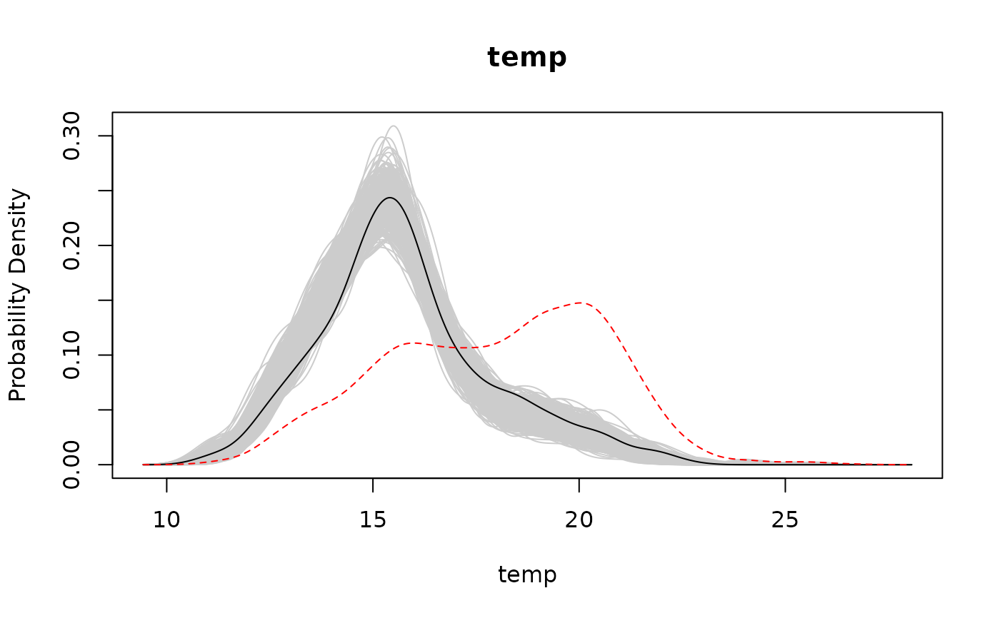
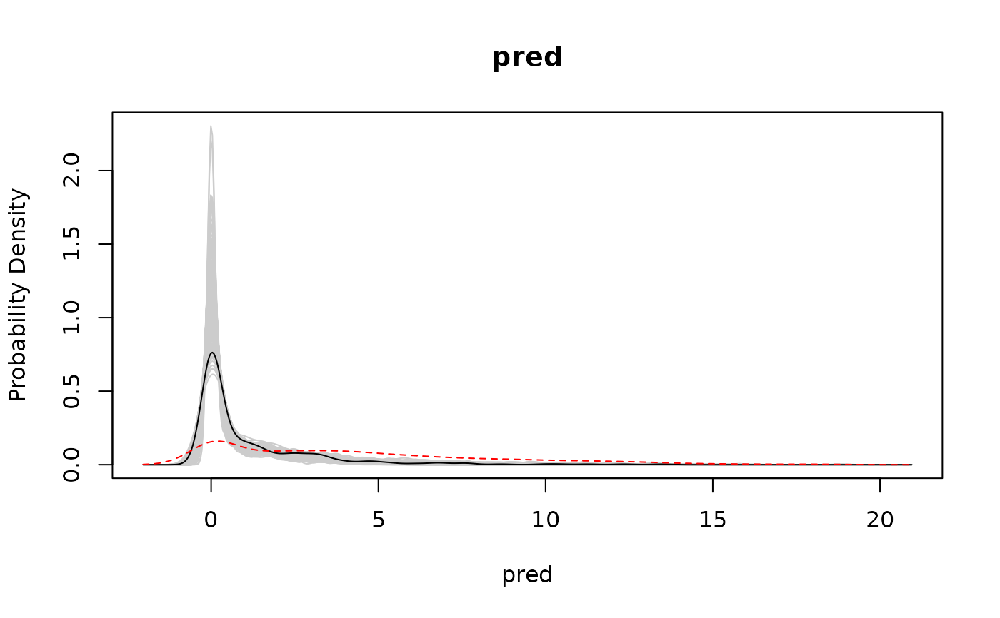
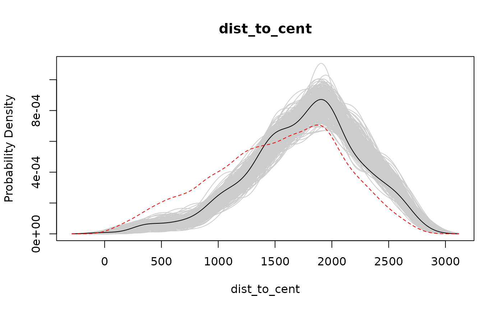
# Plot only first variable
plot(uhc_dat[1])
 # Plot only "cover" variable
plot(uhc_dat["cover"])
# Plot only "cover" variable
plot(uhc_dat["cover"])
 # Coerce to data.frame
df <- as.data.frame(uhc_dat)
# Simplify sampled lines to confidence envelopes
conf <- conf_envelope(df)
# Default plot for the envelopes version
plot(conf)
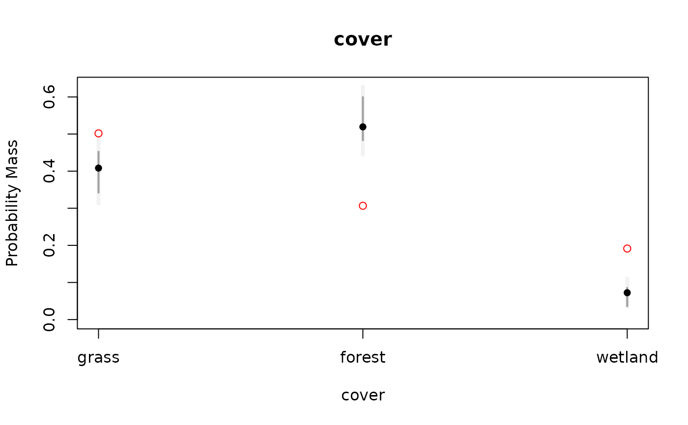
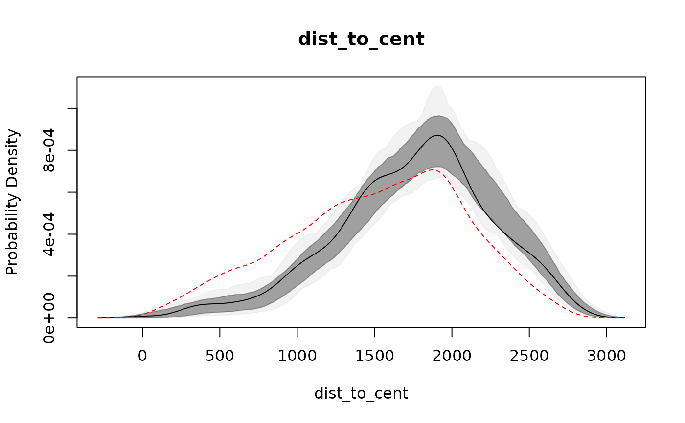
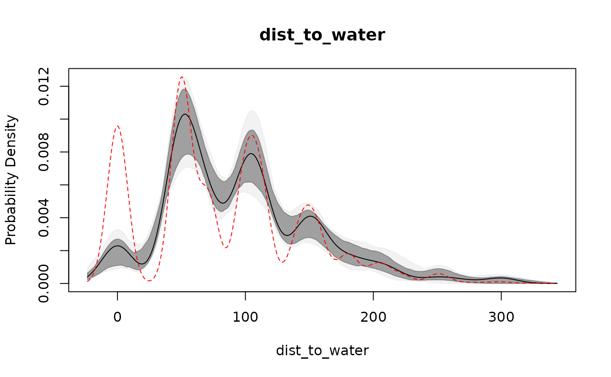
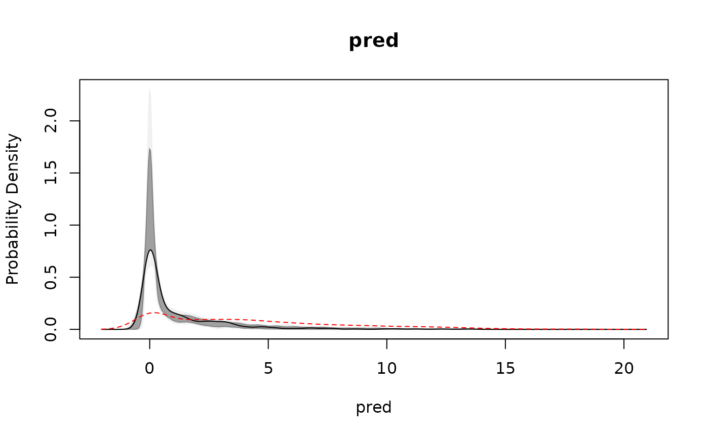
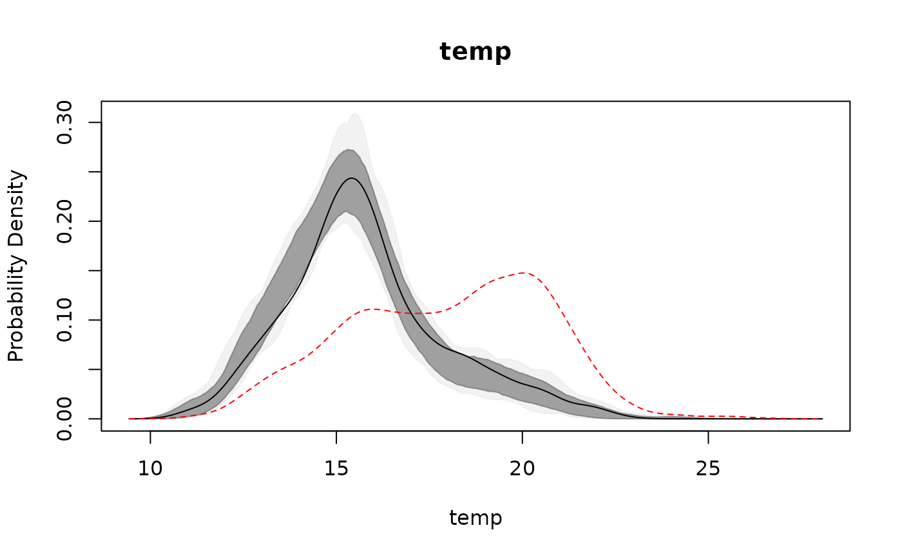
# }
# Coerce to data.frame
df <- as.data.frame(uhc_dat)
# Simplify sampled lines to confidence envelopes
conf <- conf_envelope(df)
# Default plot for the envelopes version
plot(conf)
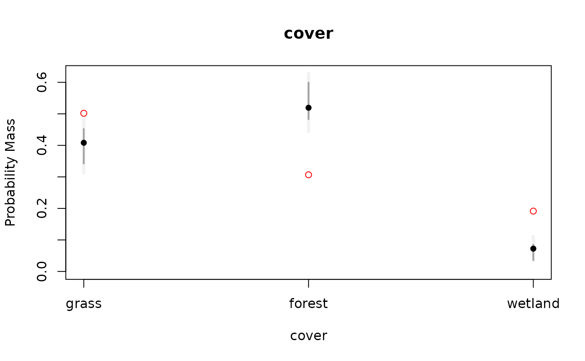
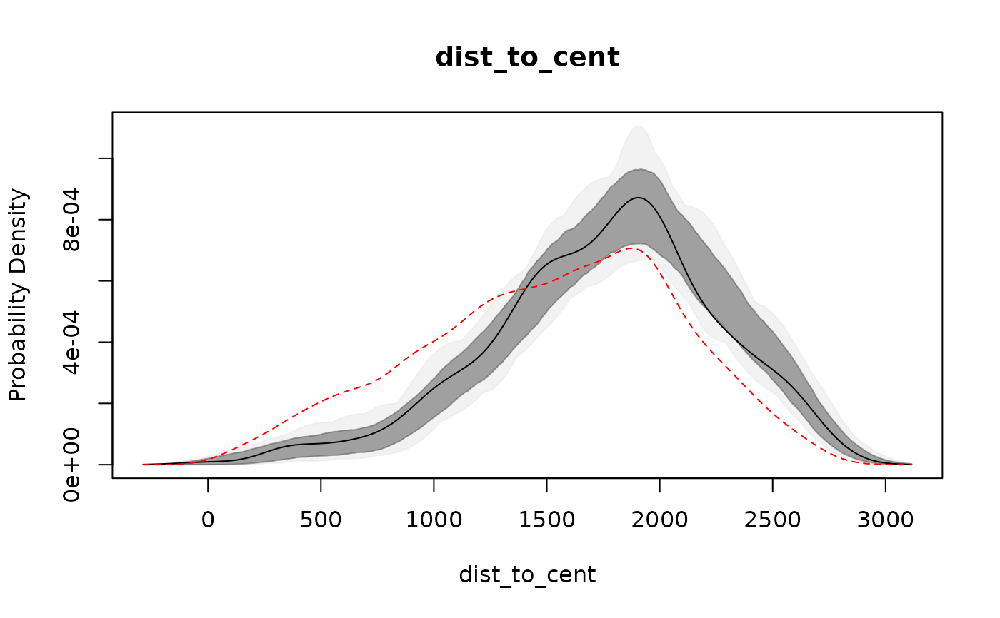
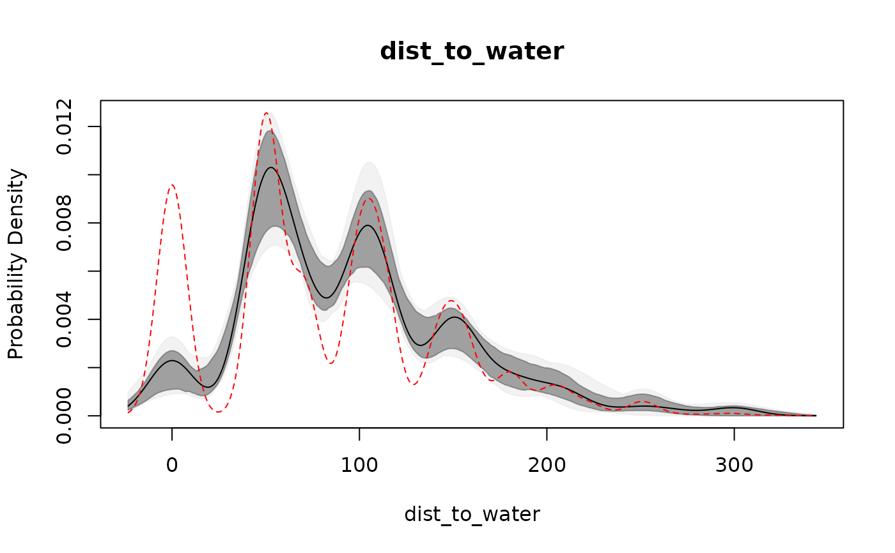
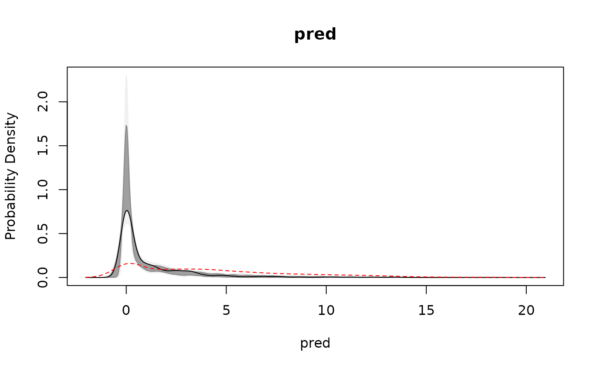
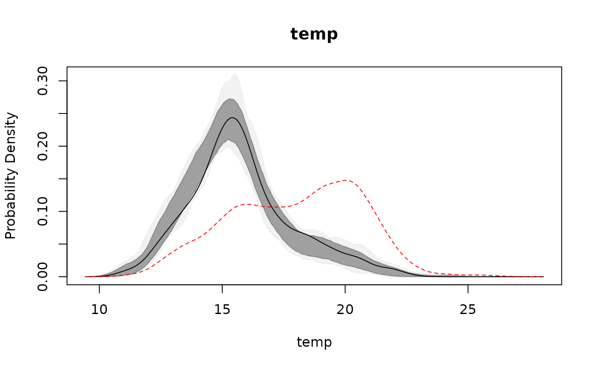
# }